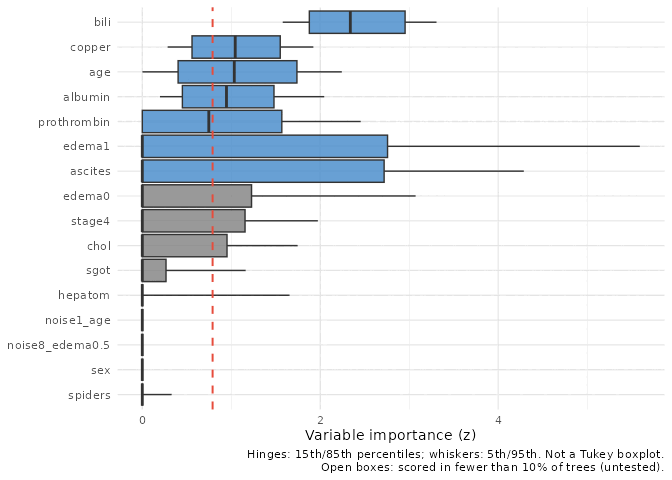
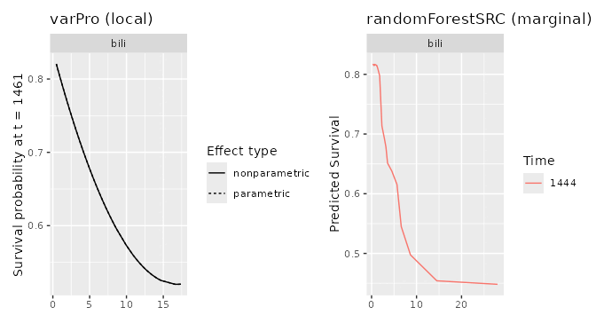
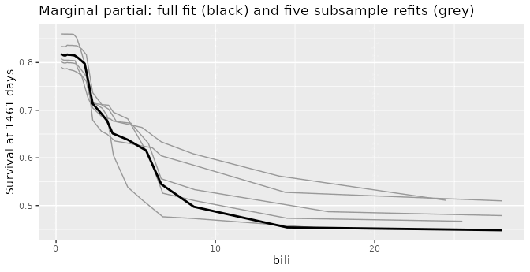

library(ggplot2)
if (requireNamespace("ggRandomForests", quietly = TRUE)) {
library(ggRandomForests)
} else if (requireNamespace("pkgload", quietly = TRUE)) {
pkgload::load_all(export_all = FALSE, helpers = FALSE,
attach_testthat = FALSE)
} else {
stop("Install ggRandomForests (or pkgload for dev builds) to render this vignette.")
}varPro (Lu and Ishwaran 2024) ranks variables by releasing the rules of a random forest one variable at a time and asking how much the outcome moves. Its defaults suit a large data set, where every candidate variable gets many chances to be tested. On a small one, or one with many rare factor levels, some candidates are barely tested at all, and the output does not tell you which. This vignette shows how to find out, how much the defaults matter, and what the partial plots can and cannot say when the sample is small.
Most of the behaviours described here belong to varPro and randomForestSRC; for those we name the upstream function and the argument that changes it. Where a behaviour is ggRandomForests’ own, we say so.
The data
We use the primary biliary cirrhosis data from randomForestSRC: the 276 complete cases, 111 deaths, and 17 predictors, with the yes/no and graded predictors stored as factors. To give the screen something it should reject, we add ten permuted copies of real columns: the same values shuffled between patients, so unrelated to survival by construction. Five copy continuous predictors and five copy factors, so each kind of variable has noise of its own kind. The fits are in vignettes/precompute_varpro_small.R. The two that matter are a varPro fit on its defaults and one with every variable offered to the forest:
Which variables did varPro test?
A variable can drop out at three places, and it helps to name them.
-
Eligible. varPro first ranks the candidates quickly, by default with a lasso and a shallow forest (“split weights”), and builds release rules only for the top of that ranking (
nvar). A factor enters as one term per level. A term below that cut is not eligible: no rule is ever built for it, so the screen says nothing about it, for or against. - Tested. An eligible term is scored tree by tree, by comparing the outcome inside a rule with the outcome once the rule’s condition on that term is released. A term scored in at least 10% of the trees we call tested.
- Untested. Everything else: terms that were not eligible, eligible terms with no usable rule, and terms scored in too few trees.
varpro_coverage() reports all three, per term or, with by = "variable", per variable with factor levels rolled up. For the fit on varPro’s defaults:
cg_real[, c("variable", "eligible", "n_trees", "coverage", "z", "tested")] variable eligible n_trees coverage z tested
1 bili TRUE 1000 1.000 2.38730155 TRUE
2 copper TRUE 988 0.988 1.04780906 TRUE
3 albumin TRUE 982 0.982 0.97009864 TRUE
4 age TRUE 950 0.950 1.06184713 TRUE
5 prothrombin TRUE 844 0.844 0.79292410 TRUE
6 edema TRUE 585 0.585 0.92774489 TRUE
7 ascites TRUE 398 0.398 0.86660689 TRUE
8 chol TRUE 394 0.394 0.28871954 TRUE
9 stage TRUE 318 0.318 0.33882610 TRUE
10 sgot TRUE 188 0.188 0.09401103 TRUE
11 hepatom TRUE 131 0.131 0.07500533 TRUE
12 spiders TRUE 59 0.059 0.00000000 FALSE
13 sex TRUE 12 0.012 0.00000000 FALSE
16 alk TRUE 0 0.000 NA FALSE
17 trig TRUE 0 0.000 NA FALSE
18 platelet TRUE 0 0.000 NA FALSE
23 treatment FALSE 0 0.000 NA FALSEOf 17 predictors, 1 was not eligible (treatment), 3 were eligible but never got a usable rule (alk, trig, platelet), and 2 were returned but scored in too few trees to rank (spiders in 5.9% of trees; sex in 1.2% of trees). That is 6 of 17 predictors about which the screen has no evidence either way.
What does a z of zero mean?
varPro’s importance (z) is an average over the trees, and a tree with no rule for the term counts as zero. The average is winsorised: trees above the 90th percentile are pulled down to it and trees below the 10th pulled up, before averaging (trim = 0.1 in varPro::importance()). Nothing is dropped; the clamping stops a few extreme trees from dominating.
The side effect is the one to know about. For a term scored in fewer than one tree in ten, the 90th percentile is itself zero, so every non-zero tree is pulled down to zero and z comes back as exactly 0, whatever those trees found. The reverse does not hold: a term scored in every tree also gets z = 0 when the outcome means its rules compare agree. A z of 0 is ambiguous, and coverage tells the two apart: with low coverage it means “not tested enough to rank”, with high coverage “tested and found unimportant”. Read coverage beside z, never z alone.
Reading the importance plot
gg_varpro() draws each term’s importance across the trees. Score all the trees: by default varPro::importance(), and gg_varpro() with it, scores a random sample of 150, so the answer can change from run to run. Here the default sample selects 6 terms and scoring all 1,000 trees selects 7.
plot(vs$gg_guided_all)
# Live: plot(gg_varpro(vp_guided, max.tree = vp_guided$rf$ntree))Three things are easy to misread.
- Untested trees add zeros. Each tree that never tested a term contributes a 0, which pulls the lower whisker and box toward 0 as coverage falls. At high coverage the box reflects the scored trees, and need not reach 0.
- Order and colour measure different things. Rows are ordered by the median tree, but coloured by z, the winsorised mean, against the cutoff (dashed). A term that a few trees find very important and many find unimportant has a long box and a low median; it can rank below a term with steadier, smaller importance.
- A row with no box is a term scored in too few trees; its z is 0 for the reason above, and the caption calls these open boxes.
How much do the settings matter?
Two settings turn the per-tree scores into a ranking and a selection: the winsorising trim, and the cutoff (0.79 by default) that colours a term as selected. We rescored the same fit with less winsorising.
trim_tab <- data.frame(
trim = names(vs$trim_z),
terms_above_0 = vapply(vs$trim_z, function(t) sum(t$z > 0), integer(1)),
terms_above_0.79 = vapply(vs$trim_z, function(t) sum(t$z > 0.79), integer(1)),
rank_agreement = vapply(vs$trim_z, function(t) {
b <- vs$trim_z[[1]]
round(stats::cor(t$z, b$z[match(t$term, b$term)], method = "spearman"), 2)
}, numeric(1)))
trim_tab trim terms_above_0 terms_above_0.79 rank_agreement
0.1 0.1 12 7 1.00
0.05 0.05 13 7 0.97
0.025 0.025 13 7 0.97
0 0 16 7 0.97The trim matters little: the ranking holds, and the terms that gain a z above zero are the barely tested ones, at values close to zero. The cutoff matters a great deal. Here is how many variables each cutoff keeps.
vz <- cg_real[!is.na(cg_real$z), ]
cuts <- c(0, 0.5, 0.7, 0.79, 0.9, 1, 1.5)
data.frame(cutoff = cuts,
variables_kept = vapply(cuts, function(k) sum(vz$z > k), integer(1))) cutoff variables_kept
1 0.00 11
2 0.50 7
3 0.70 7
4 0.79 7
5 0.90 5
6 1.00 3
7 1.50 1 variable z coverage
3 albumin 0.9700986 0.982
6 edema 0.9277449 0.585
7 ascites 0.8666069 0.398
5 prothrombin 0.7929241 0.8444 well-tested variables sit between z 0.5 and 1.0, one of them (prothrombin, z 0.79) right on the default line. Anywhere in that range the “selected” set runs from 3 to 7 variables. varPro’s own cross-validation, varPro::cv.varpro(), chooses a cutoff of 0.72 for this fit. With varPro’s default standardisation z also shrinks as more terms share each tree, so a cutoff does not carry from one fit to another. If you need a selection, tune the cutoff; do not take 0.79 as given.
Checking against noise
The noise columns give a reference that moves with the fit. varpro_coverage(noise = "^noise") marks them, takes the largest z among the tested noise copies of each kind (categorical or continuous), and flags a real variable as selected when it beats that bar.
On varPro’s defaults the check is empty: the split weights kept every noise copy out (0 of 10 tested), which is a useful filter but leaves nothing to compare against, and varpro_coverage() warns about it. With every variable offered (split.weight = FALSE), the noise is tested:
co_noise <- co[co$noise, ]
data.frame(kind = c("continuous", "categorical"),
noise_tested = c(sum(co_noise$tested & co_noise$kind == "continuous"),
sum(co_noise$tested & co_noise$kind == "categorical")),
largest_noise_z = c(max(co_noise$z[co_noise$kind == "continuous"], na.rm = TRUE),
max(co_noise$z[co_noise$kind == "categorical"], na.rm = TRUE))) kind noise_tested largest_noise_z
1 continuous 5 0.3978672
2 categorical 5 0.1515197Continuous noise scores higher than categorical noise with no relation to the outcome at all. A forest favours variables with many split points, and a permuted continuous column still offers many. That is why the bar is set per kind. Against it, 15 of the 17 real variables beat the noise in this one fit: the screen tests everything, but it is not parsimonious.
A screen or a selection?
A selection says the kept variables were compared with the rest and found to matter. One varPro fit on its defaults keeps everything it returns, including variables it never tested, with no comparison against noise and no check of its stability. That makes it a screen: it narrows the candidates to a list a model can use, and it does not establish which variables matter.
If you need a selection, each step above is a lever:
- offer every variable (
split.weight = FALSE), so each one is tested; - report coverage beside z (
varpro_coverage()), and score all trees (max.tree = ntree); - set the cutoff by cross-validation (
varPro::cv.varpro()) or by noise copies of each kind, not by the default; - refit on subsamples and keep the variables selected in most of them;
- and, if the selected variables feed a model you then evaluate, do the selection inside the cross-validation, so the model is not judged on the data that chose its variables.
Partial dependence on small data
gg_partial_varpro() shows how the prediction moves with one variable locally: it samples training cases at random, makes virtual twins of each by setting the variable to a grid of values with the rest of the case held as it is, and keeps only the twins that resemble the training data (an isolation-forest filter by default). gg_partial_rfsrc() shows it marginally: the variable is set to each value for every case and the predictions averaged. Here is bilirubin both ways, survival at 1461 days:
one_var <- function(p, v) {
p$continuous <- p$continuous[p$continuous$name == v, , drop = FALSE]
p$categorical <- p$categorical[0, , drop = FALSE]
p
}
patchwork::wrap_plots(
plot(one_var(vs$pd_local, "bili")) + labs(title = "varPro (local)"),
plot(one_var(vs$pd_marginal, "bili")) + labs(title = "randomForestSRC (marginal)"),
nrow = 1)
The two panels come from different forests: the varPro fit above (one-hot factors, the noise columns, guided splits) and a plain rfsrc() fit on the 17 real predictors, which is how the two are usually produced. Agreement is reassuring. A difference can come from the methods (the local profile drops unsupported twins, so the marginal curve may be extrapolating where there are no cases) or simply from the two forests; to separate those, pass the varPro forest (vp$rf) to gg_partial_rfsrc(). Four things matter more on small data.
The band is not a confidence interval. Both plots summarise the cases of one fitted forest. The spread shows how much cases differ, not how uncertain the curve is; varPro’s is narrower still, because varPro::partialpro() gives every case the same intercept. To see the uncertainty of the curve, refit on subsamples. Five refits on 63% of the cases move the marginal bilirubin curve this much:
refits <- do.call(rbind, lapply(vs$pd_refits, function(p) {
cbind(p$continuous, refit = factor(p$refit))
}))
full <- vs$pd_marginal$continuous
full <- full[full$name == "bili", ]
ggplot(refits, aes(x, yhat, group = refit)) +
geom_line(colour = "grey60") +
geom_line(data = full, aes(x, yhat), inherit.aes = FALSE, linewidth = 1) +
labs(x = "bili", y = sprintf("Survival at %d days", vs$tau),
title = "Marginal partial: full fit (black) and five subsample refits (grey)")
Survival horizons snap to event times. randomForestSRC estimates survival on the grid of observed event times, so a requested horizon is moved to an event time. A request for 1461 days returns day 1444. Before the first event it is silent: requests at days 10, 30 and 41 (the first death) all return the same curve, at day 41, and a request at day 365 returns day 348. In a small arm with no early events, every early horizon is the same curve. Check the returned time, and choose horizons after the first event.
Factors are partialled level by level. varPro one-hot encodes a factor, so stage becomes stage1, stage2, stage3, stage4, and gg_partial_varpro() (through varPro::partialpro()) looks terms up by those names: ask for stage and it is skipped with a warning. Each level is then partialled on its own, with every case set to 0 and to 1 on that level:
ct <- vs$pd_local$categorical
lvl <- c("stage3", "stage4", "edema0", "edema1")
level_median <- function(l, at) {
median(ct$parametric[ct$name == l & ct$variable == at], na.rm = TRUE)
}
data.frame(level = lvl,
partial_at_0 = vapply(lvl, level_median, numeric(1), at = 0),
partial_at_1 = vapply(lvl, level_median, numeric(1), at = 1),
row.names = NULL) level partial_at_0 partial_at_1
1 stage3 0.8861823 0.8881534
2 stage4 0.8929344 0.8480336
3 edema0 0.8047510 0.8815061
4 edema1 0.8931489 0.6818633Stage 4 and severe edema (edema1) lower predicted survival, as the data say: Kaplan-Meier survival at 1461 days is 0.54 for stage 4 against 0.87 for the other stages. Before ggRandomForests PR #350 (in releases up to 4.0.0-rc9), these columns could be labelled in the wrong order, swapping “0” and “1”; refit any factor partials made with an earlier build.
One caveat remains, and it is varPro’s. partialpro() sets the one level column and leaves the factor’s other level columns as they were, so a stage 3 case “set to stage4 = 1” is stage 3 and stage 4 at once, a case that cannot exist. Here it matters little: the forest’s mean predicted survival for stage 4 is 0.717 with the other level columns left alone and 0.714 with the whole factor set to stage 4. On other data it could matter more; gg_partial_rfsrc() sets the factor itself to each level, and is the check.
Survival partials are clamped to [0, 1]. varPro::partialpro() smooths each case without a link function, so on the survival scale a curve can leave [0, 1]; gg_partial_varpro() clamps it. On a small arm, a curve sitting on 0 or 1 is a sign of that clamp, not of certainty.
References
Lu, M., and H. Ishwaran. 2024. “Model-Independent Variable Selection via the Rule-Based Variable Priority.” arXiv Preprint. https://arxiv.org/abs/2409.09003.